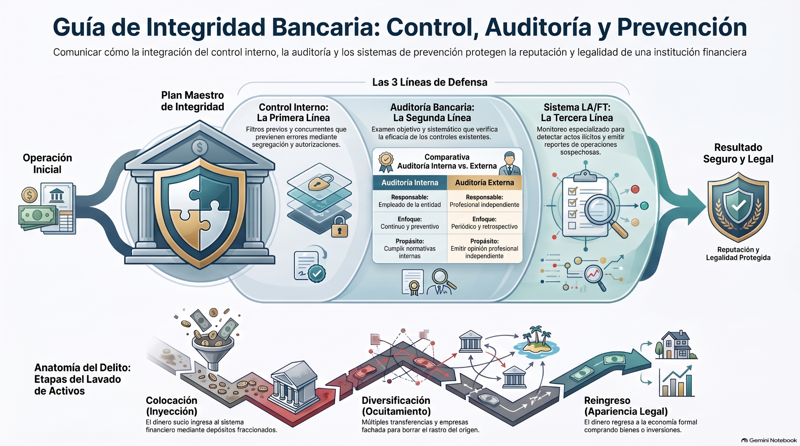

Gestión y Administración de Agencias · Auditoría Bancaria
Operar, controlar, verificar y prevenir
Recorre una agencia ficticia y comprueba cómo control interno, auditoría y prevención LA/FT protegen una operación desde que nace hasta su validación final.
Autorizar, segregar y dejar evidencia.
Verificar con técnica y criterio profesional.
Caja, bancos, inversiones y procesos.
Conocer, monitorear, detectar y escalar.
Si una operación aparece correctamente registrada en el sistema, ¿eso demuestra por sí solo que fue autorizada, que los controles funcionaron y que no existe una señal de riesgo?
Tu respuesta inicial se guardará sin calificar. Volveremos a ella en el cierre.Cuatro tarjetas antes del laboratorio
Concepto primero → apoyo visual / audio → Ver pregunta. Las alternativas cambian de posición en cada nueva ejecución.
Agencia Horizonte bajo control
El corazón de la sesión: una operación pasa por autorización, auditoría, prueba de controles y prevención LA/FT. No necesitas completar escenarios opcionales para avanzar.
Cinco preguntas para integrar control, auditoría y prevención
Primer intento; si falla, segundo intento; si vuelve a fallar, Ruta correcta. Las alternativas se barajan en cada ejecución.
Todo el material dentro del programa
PPT, artículo, video principal, los dos videos cortos, infografía y audio completo. Los dos videos cortos se utilizan además en momentos distintos del recorrido.
Controlar, verificar y prevenir forman una sola cadena
Una operación segura no depende de una sola barrera. El control interno previene y ordena; la auditoría comprueba si realmente funcionó; y la prevención LA/FT analiza perfiles, transacciones y alertas para escalar cuando corresponde.
Autoriza, separa funciones, protege activos y deja trazabilidad.
Obtiene evidencia, prueba cifras y reglas, y comunica hallazgos.
Conoce al cliente, monitorea operaciones y detecta desviaciones del perfil.
Una alerta no equivale automáticamente a culpabilidad: exige análisis, documentación y el proceso institucional correspondiente.

La integridad bancaria no se logra acumulando controles, sino logrando que cada control tenga propósito, responsable, evidencia y revisión. Una agencia sólida es aquella donde operación, control, auditoría y prevención trabajan de forma coherente.